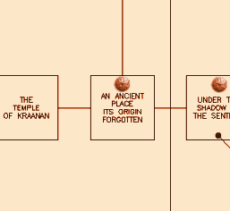

I'm uploading this picture here because I like it: it's the Meridian 59 mainland map, apparently. I haven't played Meridian 59 much, so I'm not qualified to talk about it. But the picture is nice. It's, apparently, been released as CC0 into the Public Domain, but I got it from the Meridian 59 Wiki. Just in case that goes down, I keep it here. I seems to have been taken from Gilroy's Website, but that site appears to be long offline.
It's very MUD-like, I love it.
As far as I can see, it's a map of the "Meridian 59 Mainlands". I don't know what that means. Some areas seem to be missing from it, such as –for example– a place called the Decaying City of Brax, so I'm guessing it's a partial map of some particular area. Brax Castle and the surrounding areas missing from the world map above are of particular interest to me because I've found this other map that mentions these places, which I also find quite beautiful and intriguing:
I took that map above from the Entertainment Info Center, but I don't really know whom it belongs to or its original author.
According to ChatGPT (which I don't trust much, but I haven't managed to find info anywhere else about this), "In Meridian 59 terminology, the Mainland map depicts only the surface-level interconnected outdoor zones (and towns) that make up the primary continent. Dungeons, castles, and special interior regions — such as the Ruins of Castle Brax and its associated underground or instanced maps — are not shown because they are considered separate, enclosed areas accessed via portals or doors within those Mainland zones."
So I have yet to find a full map that depicts all areas.
That said, I want to make special note of the area names. It seems that, in order to get to Castle Brax, you have to reach an area (depicted in the Mainlands map above) called "An ancient place, its origin forgotten" (to the bottom-right of Jasper, which is one of the yellow maps). That name is honestly so mysterious and cool it makes me want to know everything about it! MMOs don't seem to use lore like that anymore, and it's honestly a shame.

Another part of the map that has picked my curiosity is the areas to the east of The Island Town of Ko'Catan (North). Since I don't know anything about those areas other than their names, my imagination has been hard at work filling the gaps.
I imagine this area might be some sort of wilderness, an area beyond the last safe hub for players; a web of dangerous maps, the deeper you go, the bigger the treasures you might find, but the scarier the monsters and the harder it is to return to safety. I see a map called Avar Village there. Is it an abandoned village? Maybe something happened there, something you don't want to find out about! These sort of things make me want to explore more and more.
In fact, given how severe the death penalty is in Meridian 59, the danger of exploring such areas would feel very real. This is something many modern MMOs (in my opinion) are missing, to their own detriment.
I'm probably deeply wrong, but I do really like this concept. "Adventurer, you stand at the very edge of our kingdom. Whatever lies beyond these gates, we don't know. None have ever returned to tell the tale." Aaaa!! Maybe something to toy with in a future game. To be explored in a Vartio-like MMO.
In any case, I'm just rambling here about stuff I don't know about. If you have played Meridian 59 (or other MMO) and are passionate enough to e-mail me about it, I'd love to read all you have to tell!